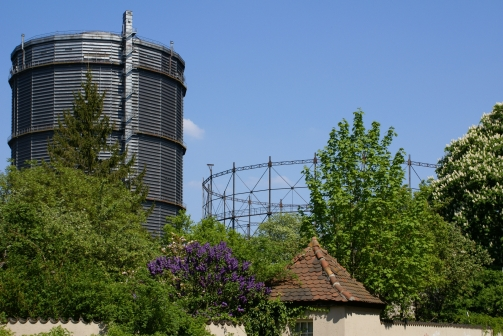
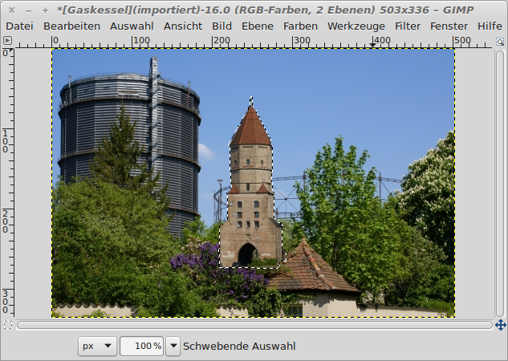

Bildteile einfügen
Das ausgeschnittene Jakobertor wird nun in das Bild mit dem Gaskessel eingefügt:
|  |
| Abb. 1: Das Bild mit dem Gaskessel |
Das Jakobertor wurde ins Bild eingefügt und die schwebende Auswahl wurde als neue Ebene definiert.
|  |
| Abb. 2: Der Jakoberturm wurde zum Gaskessel hinzugefügt |
So nimmt uns niemand ab, dass das Jakobertor jetzt neben dem Gaskessel steht. Das Bild soll den Effekt bekommen, als würde der Gaskessel hinter dem Metallgerüst stehen.
© 2009-2017 Michael Roppel